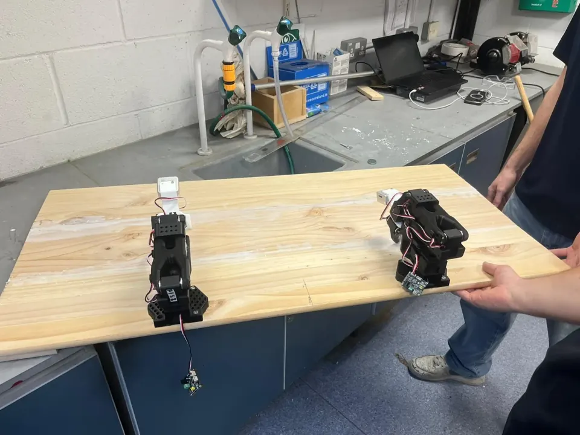
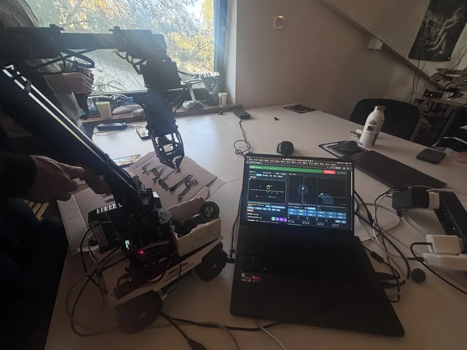
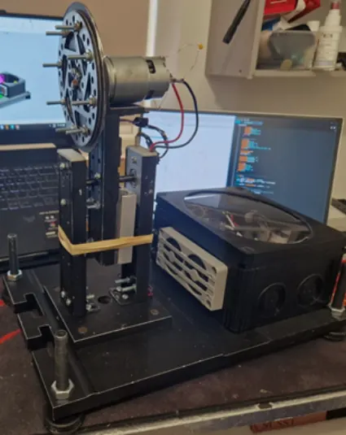
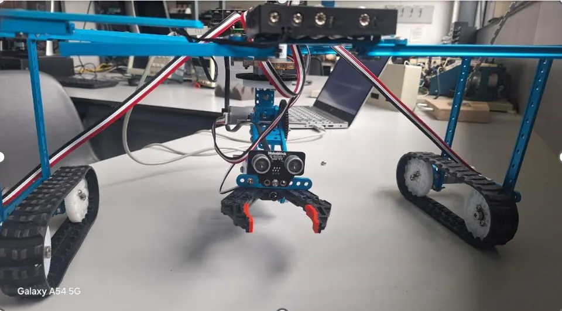
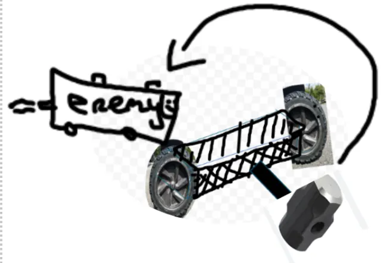

Peter Kernohan
Robotics student at Maynooth University, building robots that do useful physical work.
I’m in third year of Robotics & Intelligent Devices. Most of my work is robot arms, computer vision and automation, and I lead the university’s Engineering & Robotics Society.
Highlights
- Grew the Engineering & Robotics Society from 5 to 70 members as president
- Brought a society team to an Intel robotics competition in Munich, where they placed third
- Selected for the IEEE Global Robot Championship 2026 in Malta, Robot Arm AI Challenge
- Awarded MUSE Platinum, the top level of Maynooth University’s Student Experience Award
Open to placements and projects in robotics and automation, especially in manufacturing and off-site construction.

Selected work
Robots I’ve designed, built and programmed, most recent first.

Low-cost assistive robotic arms
October – December 2026, in progress
A dual SO-101 arm system trained with imitation learning to pour drinks and pick and place tools, shaped by feedback from Naas Men’s Shed.
LeRobot, imitation learning, SO-101

Autonomous household sorting robot
September 2026, Alien Bazaar hackathon, Warsaw
A four-person hackathon build: a rover with a robot arm and camera that finds household items and sorts them on its own.
Python, OpenCV, vision-language model, visual servoing

Reaction wheel inverted pendulum
January – June 2026
An upside-down pendulum kept balanced by a spinning wheel, modelled in MATLAB/Simulink with state-feedback control.

Autonomous pick-and-place robot
January – June 2025
An Arduino mechanism with ultrasonic sensing and PID control that approaches an object and grips it automatically.

RoboRiotz combat robot
May – August 2025
A featherweight combat robot using torque reaction, with MATLAB modelling of its rotational dynamics.
Experience and leadership
Leadership
- PresidentEngineering & Robotics Society, Maynooth University2025 – present
Took over the society and grew it from about 5 to 70 members. Brought a team to an Intel robotics competition in Munich, where they placed third. Run weekly lectures, builds and Makers Club sessions.
- TreasurerIEEE Maynooth Student Branch2025 – present
Manage the budget for IEEE events. Selected in a two-person team to represent IEEE UK & Ireland at the IEEE Global Robot Championship 2026.
- Head Student RepresentativeRobotics & Intelligent Devices, Maynooth University2024 – present
Bring student feedback to faculty and help improve the programme.
- Assistant CoachBrazilian Jiu-Jitsu Club, Maynooth University2024 – present
Coach classes, coordinate club events and organise guest seminars.
- Student AmbassadorMaynooth University
Experience
- Lab Demonstrator, Electronic Engineering FundamentalsMaynooth UniversitySeptember 2026 – present
Support first-year students in the electronic engineering labs.
- STEM Specialist, Innovation LabNorth Shore Day Camp, New YorkSummer 2026
Set up and ran the camp’s first robotics lab, designing a two-month programme for children aged 8–12. Taught robotics, programming, CAD and electronics, and got students with no experience programming robots to navigate a maze within hours.
Education
- BSc Robotics & Intelligent DevicesMaynooth University2024 – 2028
Third year, aiming for First Class Honours. Coursework includes analog and digital circuit design, embedded systems, control dynamics, digital logic and PCB design.
Awards
- MUSE PlatinumMaynooth University Student Experience Award
The highest of the award’s four levels, recognising contribution beyond the classroom.
About
I’ve always learned best by building. Robotics pulls together what I enjoy most: electronics, programming, mechanical design and machine intelligence, all tested on real hardware.
Right now I’m most interested in robot arms that can pick, place and handle things reliably, and in how that kind of automation can take repetitive, physical work off people.
Outside my degree I run the Engineering & Robotics Society, represent my year to faculty, coach at the BJJ club and work as a Student Ambassador.
- EmbeddedArduino, Raspberry Pi, ESP32
- Circuits and PCBsAltium Designer
- ProgrammingPython, C, C++, MATLAB
- Robotics and controlROS 2, PID, state-feedback control
- AI and visionYOLOv11s, OpenCV, edge inference
- CADFusion 360, 3D printing
Get in touch
I’m happy to talk about placements, projects or robotics competitions.
peterjohnkernohan@gmail.com